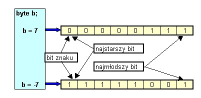

5. Operacje na bitach
Liczby ca³kowite (typów byte, short, int, long) s± reprezentowane w pamiêci
komputera w postaci binarnej jako ci±gi bitów. Bit, który znajduje siê w
takim zapisie najbardziej z lewej strony nazywa siê bitem najstarszym (najbardziej znacz±cym), a
ten najbardziej z prawej - najm³odszym (najmniej znacz±cym).

Jak pamiêtamy z wyk³adu 1 - dziesiêtn± warto¶æ liczby zapisan± w systemie
dwójkowym mo¿emy uzyskaæ sumuj±c kolejne iloczyny warto¶ci bitów (1 lub 0)
i odpowiednich potêg 2. Uwzglêdnienie liczb ujemnych wymaga, by warto¶æ
bitu znaku "brana by³a" z minusem. Dlatego na powy¿szym rysunku: Taki zapis liczb ca³kowitych nazywa siê zapisem z uzupe³nieniem do dwóch £atwo dostrzec, ¿e z tego powodu warto¶æ bezwzglêdna najwiêkszej ca³kowitej liczby ujemnej jest zawsze wiêksza od warto¶ci bezwglêdnej najwiêkszej ca³kowitej liczby dodatniej. W przypadku warto¶ci typu byte najmniejsza mo¿liwa warto¶æ równa jest 100000000, czyli -1*27 = - 128, natomiast najwiêksza mo¿liwa licznba dodatnia równa jest 01111111 = 127.
Pamiêtamy te¿, ¿e warto¶ci typu char (reprezentuj±ce znaki) mog± byæ traktowane
jak liczby ca³kowite. W tym przypadku jednak najstarszy bit nie jest traktowany
jako bit znaku - zatem warto¶ci typu char (zajmuj±ce 2 bajty) mog± kszta³towaæ
siê w przedziale od 0 do 65536.
Ka¿dy z argumentów wszystkich wymienionych operatorów bitowych musi byæ typu ca³kowitego.
public class Test {
public static void main(String[] args) {
byte b = Byte.MAX_VALUE;
System.out.println(b + " " + (b << 1));
System.out.println(b + " " + (byte) (b << 1));
int i = Integer.MAX_VALUE;
System.out.println(i + " " + (i << 1));
}
}
wyprowadzi:
Np. je¶li a1 = 5, a2 = 7, to logiczne operacje bitowe s± przeprowadzane w nastêpuj±cy sposób:
Zwróæmy uwagê, ¿e operacje te dotycz± tylko najm³odszych 3 bitów, niezale¿nie
od tego jakiego s± typu i ile miejsca w pamiêci zajmuj± argumenty a1 i a2.
public class Flags {
public static void main(String[] args) {
final int FL1 = 0x01, // sta³e pokazuj±ce które bity (flagi) maj±
FL2 = 0x02, // byæ testowane lub ustawiane
FL3 = 0x04,
FL4 = 0x08;
int flags = 0;
flags = flags | FL1; // ustawia flagê 1 (najm³odszy bit)
show("flags = flags | FL1",
flags);
flags = 0;
flags = flags | FL3; // ustawia flagê 3 (trzeci bit)
show("flags = flags | FL3",
flags);
flags = 0;
flags = flags | (FL1 | FL4); // ustawia 1 i 4 flagê
show("flags = flags | (FL1 | FL4)",
flags);
// czy flaga 1 ustawiona
if ((flags & FL1) > 0) System.out.println("Flaga 1 ustawiona");
else System.out.println("Flaga 1 NIE ustawiona");
// czy flaga 2 ustawiona
if ((flags & FL2) > 0) System.out.println("Flaga 2 ustawiona");
else System.out.println("Flaga 2 NIE ustawiona");
// czy flagi 1 i 4 ustawione (jednoczesnie)
int mask = FL1 | FL4;
if ((flags & mask) == mask) System.out.println("Flagi 1 i 4 ustawione");
else System.out.println("Flagi 1 i 4 NIE ustawione");
// czy flagi 1 i 2 ustawione (jednoczesnie)
mask = FL1 | FL2;
if ((flags & mask) == mask) System.out.println("Flagi 1 i 2 ustawione");
else System.out.println("Flagi 1 i 2 NIE ustawione");
}
static void show(String s, int flags) {
System.out.println(s);
char[] bits = Unspec.getBits(flags);
System.out.println(new String(bits) + " --- val: " + flags);
}
}
Program wyprowadzi nastêpuj±ce informacje:
flags = flags | FL1 00000000000000000000000000000001 --- val: 1 flags = flags | FL3 00000000000000000000000000000100 --- val: 4 flags = flags | (FL1 | FL4) 00000000000000000000000000001001 --- val: 9 Flaga 1 ustawiona Flaga 2 NIE ustawiona Flagi 1 i 4 ustawione Flagi 1 i 2 NIE ustawione Proszê przeanalizowaæ dzia³anie programu i przetestowaæ inne ustawienia flag. Przed lektur± dalszego tekstu proszê to zadanie rozwi±zaæ samodzielnie
Mo¿liwe rozwi±zanie:
public class Unspec {
public static char[] getBits(byte v) {
return getBits(8, (long) v);
}
public static char[] getBits(char v) {
return getBits(16, (long) v);
}
public static char[] getBits(int v) {
return getBits(32, (long) v);
}
public static char[] getBits(long v) {
return getBits(64, v);
}
private static char[] getBits(int n, long v) {
char[] bits = new char[n];
long mask = 1;
for (int k = n-1; k >= 0; k--) {
if ((v & mask) != 0) bits[k] = '1';
else bits[k] = '0';
mask = mask << 1;
}
return bits;
}
}
oraz program testuj±cy, w którym - jako argumenty wywo³ania podajemy kolejno
liczbê typu long, liczbê typu int, znak, liczbê typu byte:
class Test {
public static void main(String[] args) {
long l = Long.parseLong(args[0]);
int i = Integer.parseInt(args[1]);
char c = args[2].charAt(0);
byte b = Byte.parseByte(args[3]);
System.out.println("Warto¶æ typu long " + l);
System.out.println(new String(getBits(l)));
l = Long.MAX_VALUE;
System.out.println("Maksymalna warto¶æ typu long " + l);
System.out.println(new String(getBits(l)));
l = Long.MIN_VALUE;
System.out.println("Minimalna warto¶æ typu long " + l);
System.out.println(new String(getBits(l)));
System.out.println("Warto¶æ typu int " + i);
System.out.println(new String(getBits(i)));
System.out.println("Warto¶æ typu char: znak " + "'" + c + "'" + ", kod " + (int) c);
System.out.println(new String(getBits(c)));
System.out.println("Warto¶æ typu byte " + b);
System.out.println(new String(getBits(b)));
}
}
Program ten - przy podanych argumentach: 1 -1 a -7 wyprowadzi:
Warto¶æ typu long 1 0000000000000000000000000000000000000000000000000000000000000001 Maksymalna warto¶æ typu long 9223372036854775807 0111111111111111111111111111111111111111111111111111111111111111 Minimalna warto¶æ typu long -9223372036854775808 1000000000000000000000000000000000000000000000000000000000000000 Warto¶æ typu int -1 11111111111111111111111111111111 Warto¶æ typu char: znak 'a', kod 97 0000000001100001 Warto¶æ typu byte -7 11111001
|
|||||||||||||||||||||||||||||||||